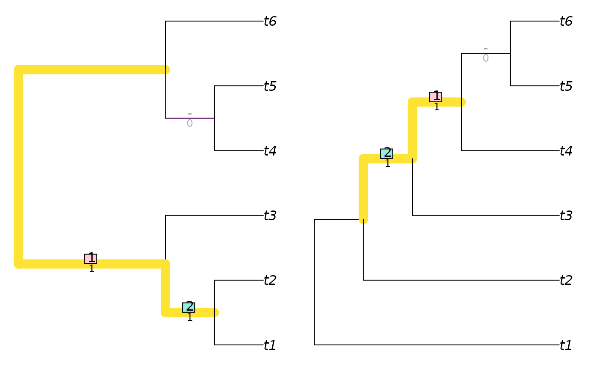
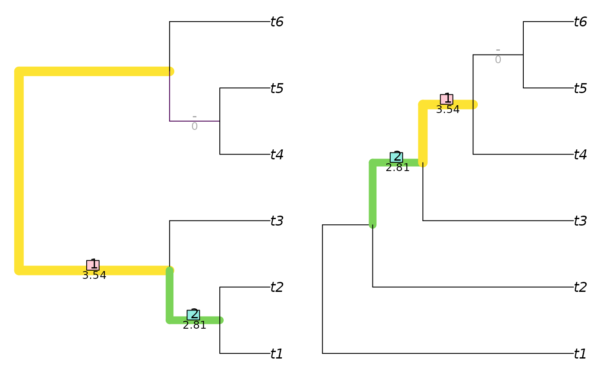

Depict the splits that are matched between two trees using a specified Generalized Robinson–Foulds similarity measure.
Usage
VisualizeMatching(
Func,
tree1,
tree2,
setPar = TRUE,
precision = 3L,
Plot = plot.phylo,
matchZeros = TRUE,
plainEdges = FALSE,
edge.width = 1,
edge.color = "black",
...
)Arguments
- Func
Function used to construct tree similarity.
- tree1, tree2
Trees of class
phylo, with identical leaf labels.- setPar
Logical specifying whether graphical parameters should be set to display trees side by side.
- precision
Integer specifying number of significant figures to display when reporting matching scores.
- Plot
Function to use to plot trees.
- matchZeros
Logical specifying whether to pair splits with zero similarity (
TRUE), or leave them unpaired (FALSE).- plainEdges
Logical specifying whether to plot edges with a uniform width and colour (
TRUE), or whether to draw edge widths according to the similarity of the associated splits (FALSE).- edge.width, edge.color, ...
Additional parameters to send to
Plot().
Details
Note that when visualizing a Robinson–Foulds distance (using
Func = RobinsonFouldsMatching), matched splits are assigned a similarity
score of 1, which is deducted from the total number of splits to calculate
the Robinson–Foulds distance. Unmatched splits thus contribute one to
total tree distance.
Examples
tree1 <- TreeTools::BalancedTree(6)
tree2 <- TreeTools::PectinateTree(6)
VisualizeMatching(RobinsonFouldsMatching, tree1, tree2)

VisualizeMatching(SharedPhylogeneticInfo, tree1, tree2, matchZeros = FALSE)
